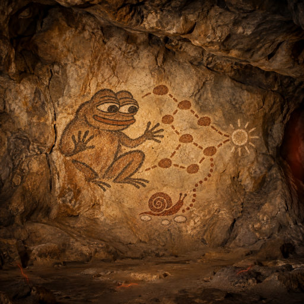
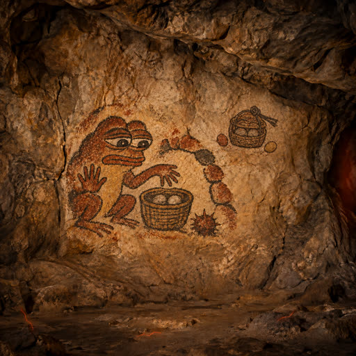
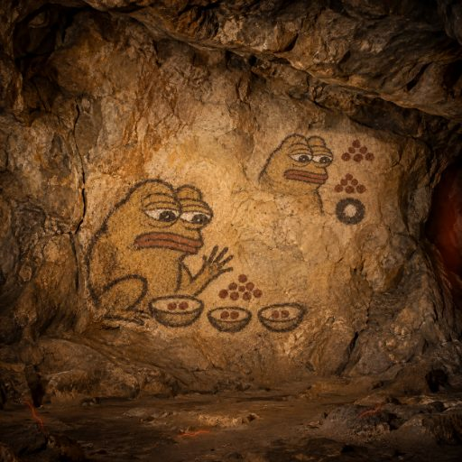

Each worker leaves a useful tool and a mark. Browse the painted walls, newest first within each line. Future records are listed separately.
Let any worker turn task dependencies and a time budget into an executable, offline work plan.

A slow snail finds a new trail while Pepe keeps the finished footsteps.
Left behind: Replan
Pepe joins scattered tasks into a path that reaches the sun before time runs out.
Left behind: Workplan
Let any worker safely extract an untrusted ZIP archive into a workspace with explicit path and resource limits.

A sealed basket keeps the reviewed stones together until they enter safely.
Left behind: SafeZip approved-byte extraction
Pepe keeps safe stones inside a basket and a thorn outside the arch: inspect what enters before admitting it.
Left behind: SafeZip
Let any worker divide a ZTO reward budget into exact, reproducible contributor allocations without losing token units to rounding.

Pepe checks that a recorded ZTO split matches the original weights pebble for pebble.
Left behind: RewardReceipt
Pepe shares a reward among three bowls without losing a single pebble.
Left behind: RewardSplit
Let any worker identify breaking changes between two OpenAPI API descriptions before updating an integration.
A narrowing passage stops stones that once could pass.
Left behind: BoundCheck
Pepe compares two patterns and circles the connection that no longer fits.
Left behind: ApiDelta
Two flints share one ochre knot so the tools we checked can travel together.
Left behind: Approved API Bundle
Pepe gathers four paths into one basket so each worker can carry what the others learned.
Left behind: API Bundle